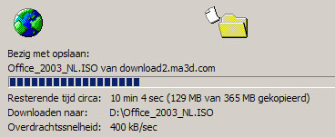

Een verse Office
woensdag 22 oktober 2003 | Nerdisme
Zonet een mailtje gehad van de Ma3D webmaster dat een verse download op mij staat te wachten: Office 2003 NL Pro! Binnenhalen met Firebird lukt niet… vreemd. Dan maar Internet Explorer weer van onder het stof gehaald.
Toch wel een mooi initiatief van Microsoft voor scholen en studenten (in zover er van het adjectief ‘mooi’ sprake kan zijn in de bedrijfswereld - er schuilt altijd wel iets achter). Alle recentste Microsoft software (Windows, Office, Encarta, Studio,…) kan je op deze site voor een bescheiden tarief per jaar zomaar afhalen in de vorm van ISO bestanden. Downloaden, branden, installeren mét unieke serial… en dat allemaal legaal. Het is echt eens wat anders ;-)
